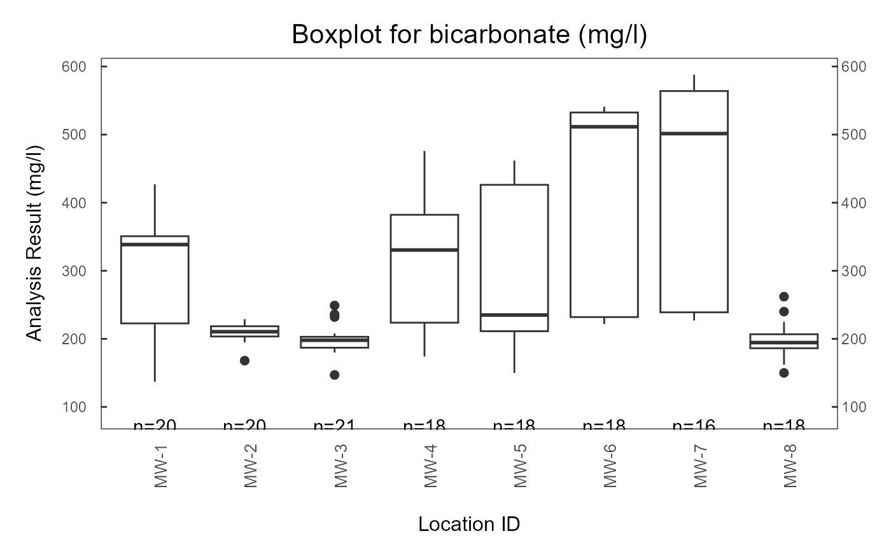

Creates boxplots for environmental monitoring data. Boxplots are generated separately for each analyte and display the distribution of analytical results across sampling locations.
Usage
boxplot(df, ...)
# S3 method for class 'data.frame'
boxplot(
df,
location,
analyte,
result,
sample_date = NULL,
reporting_flag = NULL,
unit = NULL,
...
)
# S3 method for class 'env_schema'
boxplot(
df,
coef = 1.5,
scale_y_trans = "identity",
show_points = FALSE,
fill = NULL,
notch = FALSE,
plot_ci = FALSE,
standards = FALSE,
pnt = 2,
short_name = FALSE,
coord_flip = FALSE,
legend_title = NULL,
add_explanation = FALSE,
...
)Arguments
- df
A data frame or `env_schema` object.
- ...
Additional arguments passed to methods.
- location
Location column.
- analyte
Analyte column.
- result
Analytical result column.
- sample_date
Sample date column.
- reporting_flag
Reporting qualifier column.
- unit
Reporting unit column.
- coef
Length of whiskers expressed as a multiple of the interquartile range.
- scale_y_trans
Transformation applied to the y-axis.
- show_points
Logical. If `TRUE`, individual observations are displayed using either a beeswarm or jittered scatter overlay.
- fill
Optional column name used to group and color boxplots. Must be supplied as a character string naming a column in `x`.
- notch
Logical. If `TRUE`, notched boxplots are produced.
- plot_ci
Logical. If `TRUE`, bootstrap confidence intervals for the mean are displayed.
- standards
Logical. If `TRUE`, applicable standards are displayed on the plot.
- pnt
Point size used for observations and summaries.
- short_name
Logical. If `TRUE`, titles use `short_analyte_label()` values when available; otherwise `analyte_label()` values are used.
- coord_flip
Logical. If `TRUE`, axes are flipped.
- legend_title
Optional legend title.
- add_explanation
Logical. If `TRUE`, an explanatory panel describing boxplot components is added.
Value
A named list of plots, with one plot generated for each analyte. List names correspond to the analyte values in the mapped analyte column.
A named list of plot objects. One boxplot is produced for each analyte in the mapped analyte column.
Details
The function is implemented as an S3 generic and supports both raw data frames and `env_schema` objects.
For data frames, `boxplot()` first converts the input data to an `env_schema` object using the supplied column mappings and then dispatches to [boxplot.env_schema()].
Schema-aware plotting
`boxplot()` is schema-aware and relies on accessor functions rather than hard-coded column names. Users are encouraged to convert raw environmental datasets to `env_schema` objects prior to analysis and visualization.
env_schema Method
Analyte grouping is determined by the mapped analyte variable, not by internal standardized analyte metadata columns.
For `env_schema` objects, `boxplot()` automatically uses the schema mappings and standardized analytical fields:
the mapped location field
the mapped analyte field
the mapped result field
the mapped reporting flag field
`analysis_unit()` for axis labeling
`analyte_label()` and `short_analyte_label()` for titles
This allows boxplots to be generated consistently regardless of the original source column names used by the underlying dataset.
Examples
data(gw)
plots <- boxplot(gw)
names(plots)
#> [1] "Alkalinity, total (lab)" "Aluminum, dissolved"
#> [3] "Antimony, dissolved" "Arsenic, dissolved"
#> [5] "Barium, dissolved" "Beryllium, dissolved"
#> [7] "Boron, dissolved" "Cadmium, dissolved"
#> [9] "Calcium, dissolved" "Chloride, total"
#> [11] "Chromium, dissolved" "Chromium, hexavalent"
#> [13] "Cobalt, Dis" "Copper, dissolved"
#> [15] "Dissolved Oxygen" "Fluoride, total"
#> [17] "Groundwater Elevation (ref MSL)" "Groundwater, depth from TOC"
#> [19] "Hardness, total (mg/L as CaCO3)" "Iron, dissolved"
#> [21] "Lead, dissolved" "Magnesium, dissolved"
#> [23] "Manganese, dissolved" "Mercury, dissolved"
#> [25] "Mercury, total" "Molybdenum, dissolved"
#> [27] "Nickel, dissolved" "Nitrate nitrogen, total"
#> [29] "Nitrite + Nitrate, total" "Nitrite nitrogen, total"
#> [31] "Oxidation Reduction Potential" "Phosphorus, total"
#> [33] "Potassium, dissolved" "Selenium, dissolved"
#> [35] "SiO2" "Silver, dissolved"
#> [37] "Sodium, dissolved" "Specific Conductance @ 25C (field)"
#> [39] "Strontium, dissolved" "Sulfate, total"
#> [41] "Temperature (Celsius)" "Thallium, dissolved"
#> [43] "Tin, dissolved" "Total Dissolved Solids"
#> [45] "Turbidity, field" "Uranium, dissolved"
#> [47] "Vanadium, dissolved" "Zinc, dissolved"
#> [49] "pH (field)"
plots[[1]]

data(gw_data)
plots <- boxplot(
gw_data,
location = location_id,
analyte = param_name,
result = analysis_result
)
#> Warning: 13 analytes were not found in analyte metadata.
#> Aluminum, dissolved
#> Chromium, hexavalent
#> Cobalt, Dis
#> Groundwater Elevation (ref MSL)
#> Groundwater, depth from TOC
#> Nitrite + Nitrate, total
#> SiO2
#> Strontium, dissolved
#> Temperature (Celsius)
#> Tin, dissolved
#> ,
#> Error in validate_env_schema(out): Missing mapped columns: sample_date